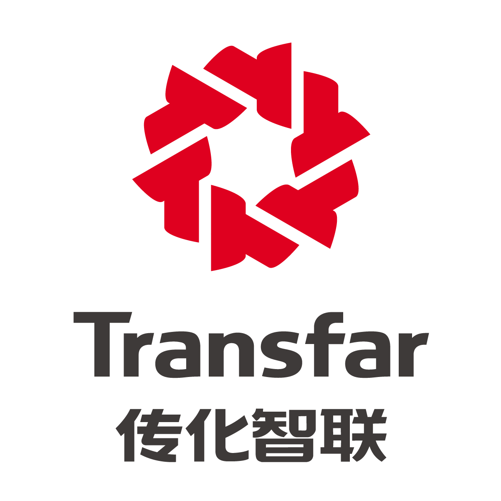

Designed and developed a Microsoft Access database for sales orders, to store records and track order processing, improving efficiency by 50%
Took responsibility for routing shipments from 6 warehouses, including 5 third-party logistics, with an exclusive focus on punctuality and product accuracy, avoiding refusal costs and extension fees
Reviewed logistics invoices from January to June 2019, and completed and sent fiscal drayage breakdown reports on a monthly basis, retrieving $25,000+ overcharges from carriers and trackers
Forecasted inbound expense monthly, tracked containers with 4 forwarders, assigned unloads, and chased pickups before last free day, reducing demurrage, per-diem, and chassis or bobtail rental fees by 60%
Transfar Zhilian Co., Ltd. | Hangzhou, Zhejiang, China
Operations Intern | July 2018 – Aug. 2018
Conducted marketing researches for Internet of Vehicles systems, evaluated suppliers by analyzing product features and factory locations, and identified 9 suitable suppliers as well as negotiated to seek bases of cooperation
Draw a Gantt chart to manage preparation progress of new products, abbreviating period by 10%; projected costs for different channels and estimated corresponding selling prices

MSU Office of Admissions | East Lansing, MI
Clerical Assistant | Oct. 2017 – May 2019
Operated a WeChat official account to attract prospect Chinese students, and wrote and designed 15 posts, absorbing 2000+ freshmen, parents, and high school counselors
Introduced MSU to 500+ incoming Chinese freshmen and parents on WeChat groups, and answered questions about learning and daily lives at university
Presented ideas at conferences with 10+ Chinese faculty to discuss how to reduce an alarming academic probation rate of Chinese students, getting adopted
Organized and recorded an interview video of feelings at MSU, broadcasting at 4 freshman yield events in China
MSU Chinese Undergraduate Students Association (CUSA) | East Lansing, MI
President | Apr. 2018 – May 2019
On behalf of CUSA, established good friendships and cooperative relations with representative of 10+ sponsors and president of each Chinese student association in Big Ten Alliance
Directed 8 executive board members and 70+ general members to promote Chinese culture by leading activities, bridging gaps between students and local communities, and job searching
Chaired weekly general meetings and executive board meetings, and followed agendas efficiently to reflect on completed contents, review existing objects, and revise upcoming activities
Led 50+ general members to cooperate with Detroit Metro Airport, Michigan Flyer, banks, and mobile carriers, providing airport pickups and card-opening services for 300+ Chinese freshmen
Coordinated three-hour 2019 Spring Festival Gala at Wharton Center as Chief Director, attracting 1000+ audience